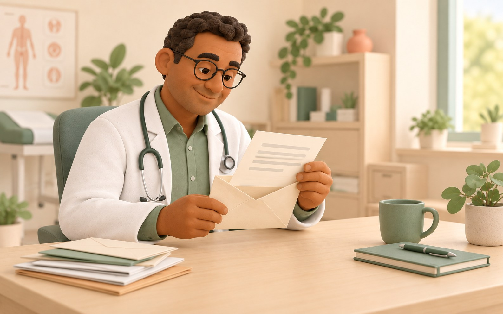
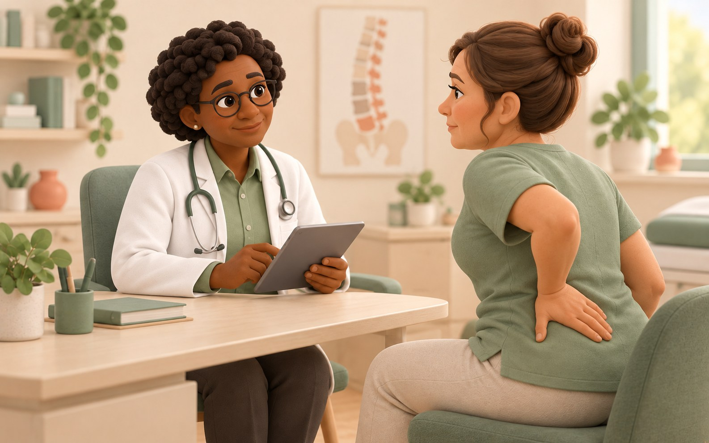
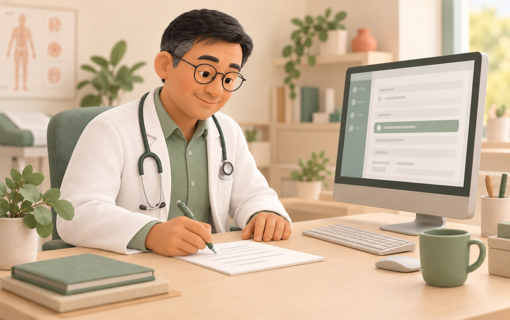
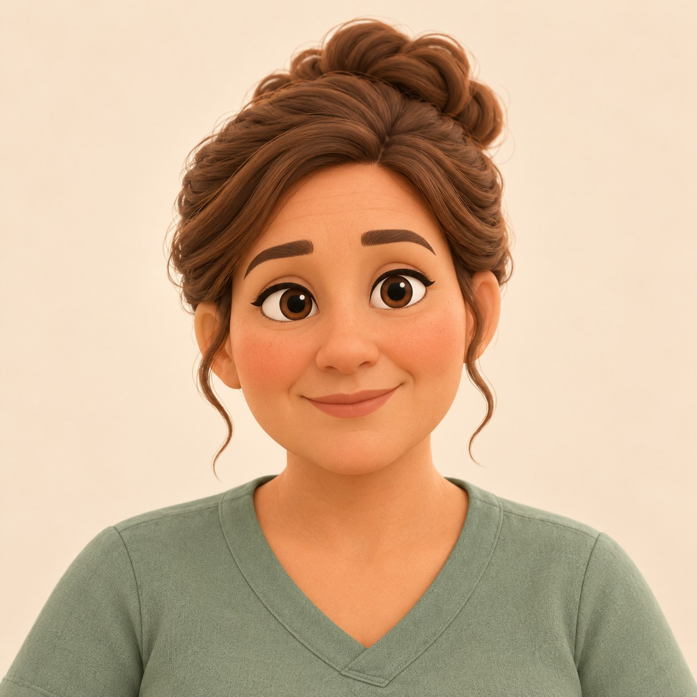
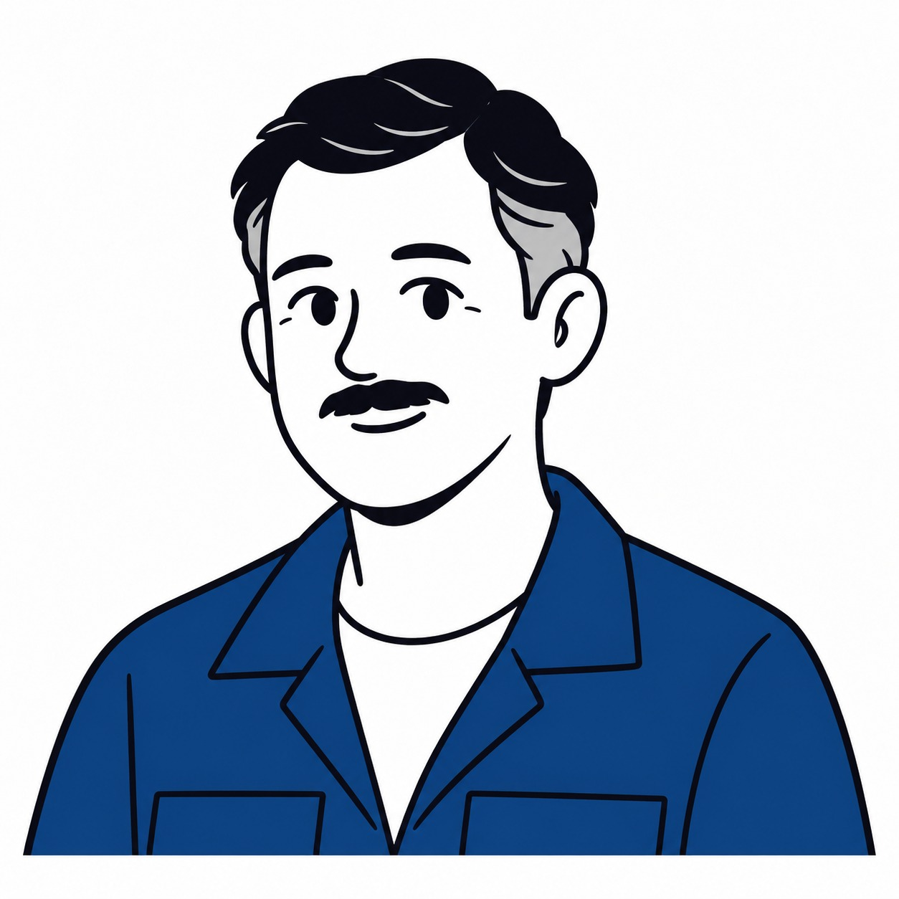
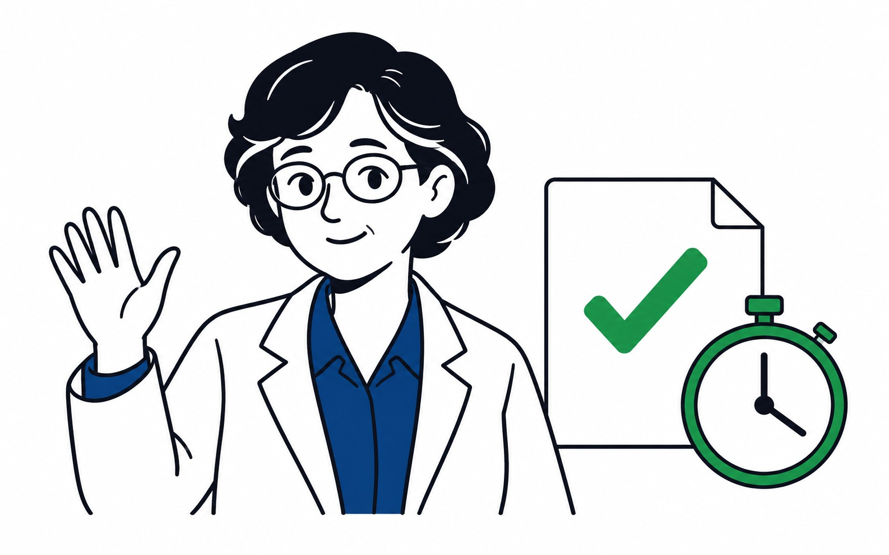

Illustrations du module de formation
Sept illustrations 2D, contours sombres, bleu et accents verts sur fond blanc. Mme R. conserve la même apparence dans son portrait et la consultation. Les fichiers JPEG conservent leurs dimensions et chemins d’origine.





